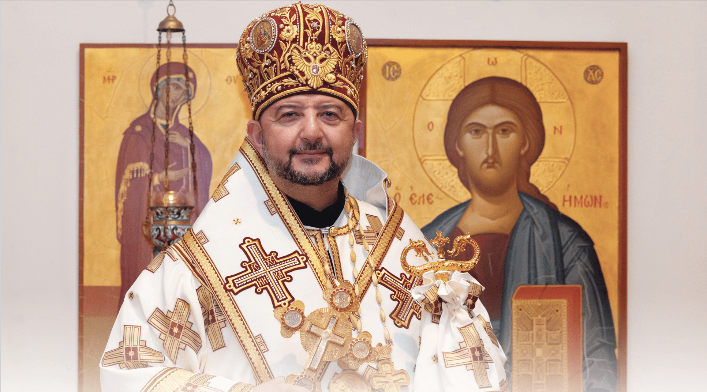

Our Bishop
Bishop François Beyrouti
Saint Thekla Melkite Catholic Community is part of the Melkite Greek Catholic Eparchy of Newton.

Melkite Eparchy of Newton
Connected to the wider Melkite Catholic Church.
Bishop François Beyrouti serves as bishop of the Melkite Eparchy of Newton. His ministry connects local Melkite communities across the United States with the wider Eastern Catholic tradition and the life of the Church.
For the authoritative biography, pastoral information, and official updates, visitors should use the official Eparchy page.